En desarrollo… / Under development…
ANUNCIO IMPORTANTE ANTES DE EMPEZAR
Antes de empezar el temario es necesario recordar que para asimilar de manera efectiva el temario de esta parte de la asignatura es necesario conocer y haber integrado los siguientes conocimientos de estadística descriptiva e inferencial:
Medidas de tendencia central: media, mediana, moda.
Medidas de dispersión: desviación estándar y varianza.
Teorema central del límite, distribución normal, distribución normal cumulativa.
Métodos inferenciales: t.student, ANOVA, modelos lineales.
Sin embargo, no necesitaremos conocer las fórmulas para calcular muchos de los elementos señalados anteriormente, ya que de eso se encargan paquetes estadísticos como SPSS, Excel, MatLab o R. De aquí en adelante, todo el código de análisis estadístico que se muestre en pantalla corresponderá al lenguaje R.
Importante: Será necesario el uso de una calculadora científica para el cálculo de razones trigonométricas, logaritmos y exponenciales. De hecho, el día del examen la necesitarás.
Práctica 1: Efectos cromáticos
Conceptos previos
Un estímulo se trata de una fuente de energía externa al sistema sensorial que la recibe. Éste puede caracterizarse por diversas características físicas (intensidad, velocidad, frecuencia, longitud de onda, fase…). En esta práctica, nos centraremos en aquellas características que están relacionadas con cómo percibimos el color. Para comenzar, es necesario hacer hincapié en que el color no es una propiedad de los objetos, sino una respuesta perceptiva a un estímulo determinado que depende de:
Las características de la fuente lumínica y las longitudes de ondas predominantes.
La reflectancia de la superficie sobre la que se refleja la energía proviniente de la fuente lumínica.
Las caracteristicas y limitaciones del sistema perceptivo que se encarga de dar sentido al estímulo. Por ejemplo, para ser capaces de discriminar entre estimulaciones de diferentes longitudes de onda sería necesario poseer 2 tipos de conos diferentes (principio de univarianza). Este principio nos indica que el color no es una propiedad directamente observable, sino que es una propiedad que nuestro cerebro interpreta a partir de diferencias entre la estimulación que obtienen los diferentes tipos de conos. Por ejemplo, una persona que sólo dispone de un solo tipo de conos sufre acromatopsia, una condición que no permite percibir colores, únicamente le permite ver el entorno en blanco y negro, siendo sólo capa de discriminar entre diferencias en intensidades lumínicas. Para experimentar una visión cromática, un observador debe disponer de 2 o más tipos de conos que le permitan desambiguar las diferencias de estimulaciones en diferentes longitudes de onda. Por ejemplo, una persona daltónica al únicamente disponer de 2 tipos de conos, sea capaz de diferenciar entre menor cantidad de colores que una persona cuya retina dispone de 3 tipos de conos (tricromate).
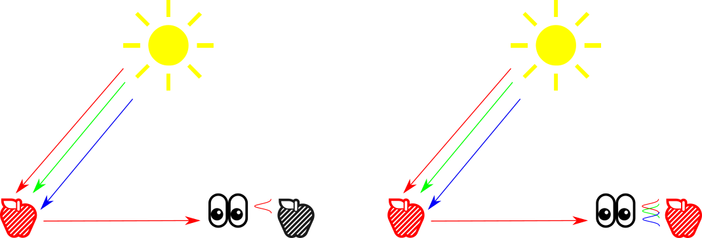
Desde una perspectiva física, el factor más importante para describir el color es la longitud de onda (\(\lambda\)). La longitud de onda se trata de una dimensión continua descrita por el conocido como espectro electromagnético. Nuestro sistema visual únicamente nos permite acceder a aquellas longitudes de onda dentro de la región de los 380 a los 760 nm aproximadamente.
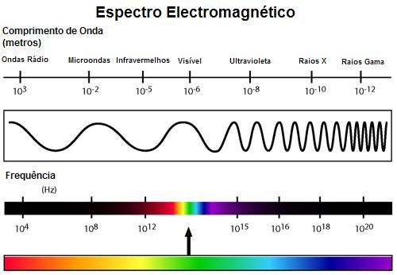
Una radiación electromagnética se denomina equienergética si transmite radiación con la misma intensidad en todas las longitudes de onda. Un ejemplo de luz equienergética es la luz solar. Sin embargo, en la mayoría de casos no estamos expuestos a éste tipo de radiación. ¿Por qué? Por ejemplo, imaginemos que la luz solar choca con la superficie de un tomate. Ésta superficie absorberá parte de la radiación y reflejará otra parte, en este caso, longitudes de onda largas correspondientes con el color rojo. La forma en la que se produzca ésta reflexión determinará las propiedades del estímulo físico que llegará hasta nuestros sentidos. Por esta razón es importante conocer cómo puede reaccionar una superficie a la exposición de una misma radiación:
Reflexión selectiva: Indica la cantidad relativa de longitudes de onda que refleja una superficie dada una luz blanca (equienergética). Por ejemplo, un tomate absorbería longitudes de onda cortas y medias (azules y verdes), mientras que reflejaría ondas de longitud larga (rojo).
Curva de reflectancia: Indica la intensidad absoluta de longitudes de onda reflejadas. En la siguiente figura se puede ver cómo la curva que describe el color azul claro está por encima que la del azul más oscuro. Esto os indica que, aunque están reflejando las mismas longitudes de onda, una superficie estaría reflejando mayor cantidad de energía que la otra. De esta manera, si el tomate anterior tuviese una superficie mate, percibiríamos un tono rojo más oscuro porque reflejaría menos cantidad de energía que uno con una superficie más brillante.
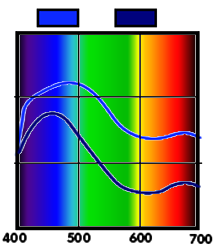
La combinación de ambas caracteristicas sobre cómo reaccionan diferentes superficies a la luz son suficientes para describir la percepción del color en diferentes sistemas. En concreto, nosotros vamos a definir las características del color mediante el sistema HSV. Dentro de esta categorización encontramos las siguientes dimensiones:
Matiz/Hue: Se relaciona con cantidad relativa de las longitudes de onda reflejadas. Es lo que comúnmente denominamos como color. Su correspondencia psicofísica sería la experiencia subjetiva de la percepción de diferentes tonos cromáticos (rojo, verde, azul y amarillo principalmente).
Luminosidad o intensidad (también llamado valor): Hace referencia a la cantidad absoluta de luz que refleja una superficie en una determinada direción o ángulo por unidad de superficie. En el SMI se mide en \(cd/m^{2}\) (candelas por metro cuadrado). Este es un factor de vital importancia en determinadas situaciones. Por ejemplo, las empresas de telefonía móvil han logrado superar en los últimos dispositivos la barrera de las 300 \(cd/m^{2}\) optimizando el consumo de batería para favorecer la visibilidad bajo la luz solar. Dentro del espectro electromagnético estaría indicado por la amplitud de onda. Su correspondencia psicofísica sería el brillo, que estaría definido como la sensación percibida de la intensidad lumínica.
Saturación: Hace referencia a la proporción de blanco con respecto al matiz cromático puro. Es decir, cuando hay una alta intensidad únicamente en una longitud de onda (o rango de longitudes de onda), el color será muy saturado. Mientras que si la intensidad está repartida uniformemente a través del espectro electromgnético se dirá que está poco saturado.

Como podemos ver, dependiendo de la intensidad y distribución del rango del espectro visible disponible, podemos categorizar diferentes tipos de estimulación de forma independiente. Sin embargo, cuando se trata de la correspondencia psicofísica entre el estímulo físico y nuestra sensación consciente, diferentes efectos observados en la literatura indican que las dimensiones del sistema HSV están interrelacionadas. Algunas de éstas interacciones se describen en los siguientes efectos perceptivos:
Efecto Abney
Cambio en el matiz percibido inducido por cambios en la pureza cromática (saturación). No es debido ni a cambios en la longitud de onda ni en el brillo.
Tanto el Hue como la luminosidad se mantienen constantes, mientras que lo que varía es la saturación. Esto produce un cambio en el matiz percibido.
Efecto Bezold-Brücke
Cambio en el matiz percibido inducido por cambios en el brillo. NO es debido ni a cambios en la longitud de onda ni en la saturación.
Tanto el matiz como la saturación se mantienen constantes, mientras que lo que varía es la luminosidad. Esto produce un cambio en el matiz percibido.
Efecto Helmholtz-Kohlrausch
Un estímulo cromático (con matiz), es percibido como más brillante que un estimulo acromático aunque ambos tengan la misma luminancia.
Tanto el matiz como la saturación se mantienen constantes, mientras que lo que varía es la luminosidad. Esto produce un cambio en el brillo o luminosidad percibida.
Miniejercicio: Sin más datos, ¿podrías establecer los parámetros de los siguientes ejemplos?
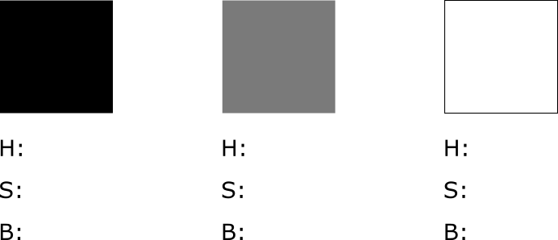
Parte práctica: Efecto Helmholtz-Kohlsrauch
Este efecto es descrito como la sensación de que un estímulo cromático (con matiz), es percibido como más brillante que un estimulo acromático aunque ambos tengan la misma luminancia.
Estímulación física:
\[\begin{equation} \label{HK_F} \ Lum_{Crom} = Lum_{Acrom} \end{equation}\]Sensación perceptual:
\[\begin{equation} \label{HK_S} \ Brillo_{Crom} > Brillo_{Acrom} \end{equation}\]Para poner a prueba este efecto, pedimos a los participantes ajustar la luminancia del estímulo acromático (estímulo test o de comparación) para hacer coincidir en brillo con el estímulo cromático (estímulo estándar o de referencia).
Para realizar el experimento, tendréis que descargar el ejecutable que se encuentra en el campus virtual: Práctica 1 Efecto Helmholtz-Kohlsrausch
Hipótesis:
- Dado el mismo brillo percibido:
- La luminancia ajustada del estímulo acromático será mayor que la del estímulo cromático:
Estamos también interesados en saber si hay algún matiz que se percibe como más brillante que otro, por lo tanto creamos un experimento con la siguiente metodología.
Variables
Variables independientes (VI):
Matiz del estímulo (rojo, verde, azul, amarillo).
Luminancia del estímulo cromático.
Variable dependiente (VD), aquella que manipula el observador:
- Luminanica asignada por el participante al estímulo cromático.
Como no somos procesadores de información infalibles y nuestra respuesta tiene cierta variabilidad o error, hemos de realizar cada combinación de condiciones varias veces. En este caso, para que el experimento sea corto hemos introducido únicamente 3 repeticiones.
\[\begin{equation} \label{trials_p1} \ 4~matices \times 10~luminancias del estímulo cromático \times 3~repeticiones~= 120~ensayos~(trials) \end{equation}\]Análisis de datos
En la siguiente figura se pueden observar los resultados para diferentes observadores:
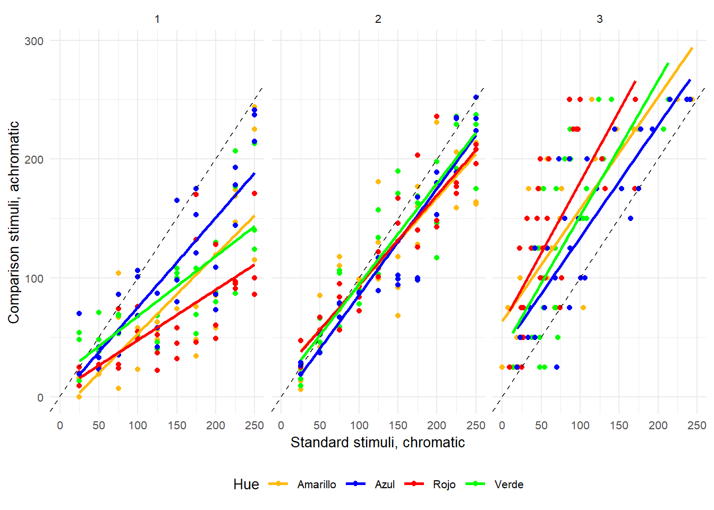
| Id | VI | Degrees of freedom | SSq | MSq | F | p. value |
|---|---|---|---|---|---|---|
| 1 | Standard | 1 | 212666.77 | 212666.77 | 179.74 | <0.01 |
| 1 | Color | 3 | 25316.17 | 8438.72 | 7.13 | <0.01 |
| 1 | Interaction | 3 | 10341.63 | 3447.21 | 2.91 | 0.038 |
| 1 | Residuals | 112 | 132515.14 | 1183.17 | NA | NA |
| Id | VI | Degrees of freedom | SSq | MSq | F | p. value |
|---|---|---|---|---|---|---|
| 2 | Standard | 1 | 401172.80 | 401172.80 | 554.71 | <0.01 |
| 2 | Color | 3 | 855.79 | 285.26 | 0.39 | 0.757 |
| 2 | Interaction | 3 | 2696.69 | 898.90 | 1.24 | 0.298 |
| 2 | Residuals | 111 | 80276.42 | 723.21 | NA | NA |
| Id | VI | Degrees of freedom | SSq | MSq | F | p. value |
|---|---|---|---|---|---|---|
| 3 | Standard | 1 | 345519.55 | 345519.55 | 158.17 | <0.01 |
| 3 | Color | 3 | 24603.80 | 8201.27 | 3.75 | 0.013 |
| 3 | Interaction | 3 | 3963.63 | 1321.21 | 0.60 | 0.613 |
| 3 | Residuals | 112 | 244663.01 | 2184.49 | NA | NA |
Ejercicios para resolver en clase:
Con ayuda de las tablas ANOVA y el gráfico anterior identifica:
¿Qué indica la línea discontinua de los anteriores gráficos?
¿Hay algún observador en el que se observe el efecto Helmholtz-Kohlsrauch? Indica en cual o cuales.
¿Se observa un efecto del matiz/Hue sobre el brillo percibido?
Imagina que observamos el efecto Helmholtz-Kohlsrauch y un efecto del matiz:
¿Cómo sería el gráfico para un observador modelo?
¿Esperarías un efecto de la interacción entre ambas variables?
¿Como sería, por lo tanto, la tabla ANOVA esperada?
Conclusiones Práctica 1
Aunque se percibe el mismo brillo para ambos estímulos, la luminancia del cromático es menor que la del estímulo acromático.
El efecto es distinto dependiendo del matiz utilizado.
En condiciones de laboratorio, efectos visuales dan resultados consistentes aún con muestras muy pequeñas, aunque existe cierta variabilidad. La variabilidad entre los participantes e incluso de un mismo participante puede deberse entre otros factores a:
Momento del día.
Luz ambiental: luz del sol, halógeno, bombillas incandescentes, etc.
Pantalla utilizada (su rango dinámico).
Concentración empleada.
Recursos adicionales
- Munsell test: Permite conocer la agudeza en la visión de color (A ver si eres capaz de superar mi puntuación de 11 ;), menor puntuación es mejor).
Práctica 2: Psicofísica clásica
Obtención de los umbrales de detección de la colinealidad.
Conceptos previos: De la Filosofía a la Psicología
El paso de la Filosofía a la Psicología como ciencia ha sido objeto de debate durante largo tiempo y establecer precursores a veces puede ser inexacto. Sin embargo, hay momentos en el desarrollo de la epistemología o filosofía sobre el conocimiento que han ayudado históricamente a entender por qué y cómo el objeto de estudio de la Psicología, es decir, el estudio de la conducta pasó a considerarse una ciencia. Si estás más interesado en qué es conducta, puedes continuar aquí continúa aquí.
La corrientes filosóficas imperantes hasta la ilustración abogaban porque el conocimiento podía existir independientemente del observador y que, de hecho, el observador podía acceder a él mediante ciertos criterios de verdad basados en la lógica. El observador se trataba, por lo tanto, de un sujeto pasivo que ya posee sensaciones e ideas a las cuales sólo necesita acceder para hacerlas emerger a su conocimiento. Es durante la Ilustración, en el siglo XVII cuando Inmanuel Kant utiliza la metáfora del giro copernicano (pasar de un universo geocéntrico a un universo heliocéntrico) para situar de nuevo al observador en una posición activa sobre el conocimiento. Kant argumenta que para llegar al conocimiento, las sensaciones han de pasar varios niveles de conocimiento. En primer lugar, la sensibilidad, que se encargaría de dar estructura a cualquier fenómeno. En segundo lugar, el entendimiento organizando las impresiones para formar categorías que nos permiten realizar juicios. Por último, la razón, que valiéndose de lo que denominaba como ideas trascendentales (universales e idénticas) a todos los humanos, permitían la generación de un conocimiento válido. En este momento, y salvando las distancias, Kant estaba describiendo cómo las diferentes estructuras sensoriales filtran y dan forma al tipo de información que un sistema biológico para generar algún tipo de conocimiento sobre el entorno. Por ejemplo, el paso de la energía electromagnética que compone la luz a la energía bioquímica que utiliza el sistema nervioso. En ese sentido, al ser idénticas y universales a todos los seres humanos, a pesar de la existencia de cierta variabilidad a la respuesta a un fenómeno, todos reaccionaremos de una forma parecida al mismo fenómeno. Por ejemplo, la contracción de la pupila ante una luz intensa.
Inciso: Estos dos últimos párrafos no serán objeto de examen, pero siempre es importante saber de dónde venimos para poder entender a dónde vamos.
Psicofísica
Ley de Weber
A principios del siglo XIX, Ernst Weber describe, la que se conoce como la primera ley Psicofísica, la Ley de Weber. Éste médico y fisiólogo alemán, se dió cuenta de que la capacidad de diferenciar dos pesos diferentes no se encontraba tanto en el peso absoluto de un objeto, sino en la diferencia relativa entre un objeto de referencia (Estímulo de referencia) y otro (Estimulo de comparación). Weber encuentra que para que dos objetos de diferente masa pudieran ser diferenciables, su masa debería variar entorno a un 3%. Es decir, si el objeto de referencia pesa 100g, para ser capaz de diferenciarlo de otro, éste debe pesar 103/97g o más/menos. El dato importante está en que Weber se dió cuenta de que esto se cumplia irrespectivamente del peso de referencia. Es decir, al igual que en el anterior ejemplo, para que un objeto de 2kg. pudiese diferenciarse de otro, éste debería pesar al menos 2.06kg.
Si dividimos la diferencia necesaria para poder diferenciar dos estímulos entre la magnitud del estímulo de referencia podemos obtener una constante (\(k\)).
\[\begin{equation} \label{WF} \ k = \frac{\Delta I}{I_{ref}} \end{equation}\]Esta constante nos permite obtener de forma rápida la Mínima Diferencia Perceptible (MDP o Just Noticeable Difference; JND en inglés) con respecto a cualquier intensidad de un estímulo.

Como podemos ver en la anterior figura, irrespectivamente de la intensidad del estímulo de referencia, la MDP es el producto entre la misma y la fracción de Weber o \(k\).
\[\begin{equation} \label{MDP} \ MDP = \Delta I = k \* {I_{ref}} \end{equation}\]Además, podemos utilizar esta constante (\(k\)), como un índice de sensibilidad para comparar entre diferentes modalidades sensoriales.
Miniejercicio: Por ejemplo, si sabemos que la constante \(k\) para diferenciar entre pesos es de \(k = 0.03\), mientras que la constante que nos indica la capacidad de diferenciar la velocidad de dos objetos es de \(k = 0.1\). ¿A qué modalidad de estimación somos más sensibles?
Principios de Psicofísica
Fechner, junto a Helmholtz y Wundt se consideran los padres de la Psicología Experimental y de la Psicofísica. Sin embargo, el paso clave de la Filosofía a la Psicología viene dado en primer lugar por Fechner a partir de su obra Principios de Psicofísica. A la vista de los descubrimientos de Weber, Fechner argumenta que la relación entre la estimulación física y su sensación percibida puede ser medida mediante sencillas relaciones matemáticas como la ley de Weber.
Se define entonces la Psicofísica como una rama de la Psicologia interesada en establecer una relación entre los cambios físicos de un estímulo (E, por ejemplo: longitud de onda, luminosidad, velocidad, contraste, tamaño…) y los cambios subjetivos o sensación interna que generan (S, sensación subjetiva que generan tales eventos).
Bajo la perspectiva de la psicofísica, podemos describir el proceso perceptivo completo mediante la siguiente cadena causal:
Estímulo distal: Estimulación o energía física reflejada o producida por una fuente externa a los mismos receptores sensoriales. Por ejemplo, una pelota.
Estímulo proximal: Proyección de la energía del estímulo distal sobre los receptores sensoriales correctos. Por ejemplo, la imagen 2D en la retina.
Transducción: Transformación de la energía proyectada por el estímulo proximal a cambios energéticos dentro del sistema nervioso.
Percepción: Tras pasar por diferentes fases de procesos nerviosos, se daría la percepción de un estímulo.
Esta cadena nos muestra que el proceso perceptivo requiere de diferentes transformaciones de la energía que da lugar al percepto. Si a esto le sumamos que el sistema nervioso presenta un ruido interno y pseudoaleatorio, podemos entender que nuestra percepción no tiene una correspondencia directa con la estimulación física, más bien es un producto elaborado y filtrado de la información externa. Sin embargo, esto es algo que nos es familiar ya con el procesamiento de un elemento de tan bajo nivel como el color… Cof, cof…
Sin embargo, a ésto se le añade otro problema. Cuando preguntamos a un observador qué ha observado, no podemos acceder directamente a su sensación subjetiva. En su lugar, únicamente podemos registrar su respuesta (R). Para medir esta espuesta y así poder acceder de diferentes maneras a cómo se relacionan la estimulación física con la percepción subjetiva, Fechner propuso una serie de métodos psicofísicos.
Métodos psicofísicos
- De los límites: el experimentador incrementa/decrementa progresivamente y de forma ordenada la intensidad de un estímulo hasta que el observador cambia su respuesta. Por ejemplo, si queremos averiguar a qué intensidad de decibelios un sonido es audible, podemos hacer el siguiente experimento: Empezamos a mostar a un participante un ruido a un nivel claramente audible y le pedimos que pulse el botón “S” si lo oye y el botón “N” si no lo oye. A medida que el participante va respondiendo que oye el sonido vamos disminuyendo los decibelios hasta que cambia su respuesta de “S” (sí), a “N” (No). En ese momento, empezamos a presentar estímulos en la dirección contraria, es decir, si antes cada vez que el participante afirmaba oír el ruido disminuíamos la intensidad, ahora presentamos un sonido claramente inaudible y a medida nos indica que no oye el estímulo vamos aumentando su intensidad.
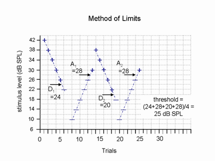
- De los estímulos constantes: presentación aleatoria (o pseudoaleatoria) de un conjunto de intensidades seleccionadas de antemano (entre 5 y 7 normalmente). Bajo éste método se le pide al participante que decida “Sí”/“No” ha percibido algo. Para hacerlo se utiliza un paradigma llamado 2AFC (two alternative forced choice o elección forzada entre 2 alternativas). Aunque éste es el método de elección debido a su facilidad de estimar parámetros psicofisicos de forma directa, requiere de una gran cantidad de ensayos para obtener unos resultados robustos.
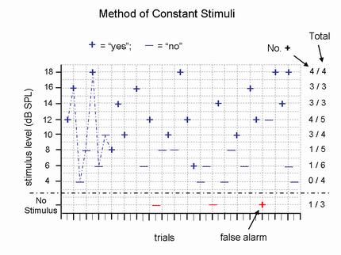
- Del ajuste: el sujeto controla y ajusta la intensidad del estímulo. Es el método más rápido, sin embargo, normalmente sobreestima el umbral de detección y no permite caracterizar una curva psicométrica.

Objeto de estudio de la psicofisica
Dentro de la psicofísica clásica, se utilizan dos mediciones básicas para caracterizar las características del sistema perceptual, el Umbral Absoluto (en adelante, UA) y el Umbral Diferencial (en adelante, UD), que determina la diferencia mínima perceptible (en adelante, DMP).
Umbral Absoluto
Fechner estaba interesado en poder establecer una escala de correspondencias psicofísicas. Esta escala se empezaría siempre a contabilizar desde la intensidad mínima que un observador afirma que percibe el 50% de las veces, es decir, al nivel del azar. Este punto se denomina Umbral Absoluto. Para calcular el UA, se mostrarían diferentes intensidades de un estímulo a un observador y se le pediría que respondiese sí o no dependiendo si ha llegado a percibir tal estímulo. Después de una cantidad suficiente de ensayos (a menudo una gran cantidad) podríamos caracterizar una curva como la siguiente haciendo una media de síes (codificados como 1) y noes (codificados como 0) para cada una de las intensidades:

La figura que se muestra arriba se trataría de una distibución normal cumulativa. Esta distribución asume que la respuesta a este experimento presentaría una varibilidad aleatoria (y por tanto simétrica) alrededor del segundo cuartil, lo que produciría esa característica forma sigmoidal. Dado que anteriormente definimos el UA como el punto en el que los observadores responden al nivel del azar, el umbral absoluto corresponde en esta figura al segundo cuartil de la distribución o a una probabilidad acumulada del 50%.
\[\begin{equation} \label{UA} \ UA = Q2 \end{equation}\]Repaso:
Recuerda que estamos hablando de una distribución cumulativa. Esta curva surge de sumar la probabilidad acumulada de una curva normal o gaussiana.
¿Qué método psicofísico habríamos utilizado en el anterior experimento simulado?
Dado que todos los observadores presentan cierta viariabilidad, se espera que cada uno de nosotros muestre un Umbral Absoluto relativamente diferente. La variabilidad en un observador deberse a factores tales como el ruido intrínseco del estímulo, el ruido en el sistema neural que fluctúa de forma aleatoria o criterios decisionales como el sueño, el aburrimiento o la excitación. Sin embargo, también podemos encontrar variabilidad entre los observadores por factores como agudeza visual, aprendizaje o los criterios decisionales anteriormente descritos.
Por otra parte, el UA puede utilizarse como un índice de sensibilidad de detección -> \(IS_{Detección}\) = 1 / UA. De esta manera, un observador con un UA de 2.5 será más sensible que uno que presenta un UA de 6.
Umbral Diferencial y Mínima Diferencia Perceptible
Como ya había descrito Weber en la Ley de Weber, no somos capaces de percibir un continuo de cambios graduales en un estímulo, si no que necesitamos de una cantidad o diferencia mínima en la intensidad de un estímulo que nos permita indicar que ha ocurrido tal cambio. Este cambio en la intensidad ya lo definimos anteriormente como Mínima Diferencia Perceptible (MDP). El hecho de que necesitemos ésta diferencia mínima se debe a que al igual que la variabilidad en el Umbral Absoluto, nuestro sistema perceptivo presenta cierta varaibilidad en la medida de un estímulo. Nuestro sistema nervioso presenta ruido interno y no es capaz de representar todas las modalidades sensoriales con una correspondencia directa con el estímulo. Esto afecta a cómo somos capaces de interpretar un estímulo y es intresante para caracterizar lo bueno que es nuestro sistema sensorial discriminando entre dos estímulos parecidos. Para ello, calculamos el Umbral Diferencial (UD).
Para calcular el Umbral Diferencial utilizaremos normalmente una metodología un poco distinta. En primer lugar, mostraremos al observador un estímulo de referencia y a continuación un estimulo de comparación como hizo Weber en sus experimentos. En éste experimento, se le pide a los participantes que indiquen qué estímulo (pesa más, es más rápido, brilla más… ). Al igual que en los experimentos para estimar el Umbral Absoluto, elegiremos un rango de estímulos (entre 5 y 7) que nos arrojen una varibailidad suficiente en los juicios de respuesta para calcular el Umbral Diferencial de forma precisa. Para ello, el rango de intensidades deben cubrir, a poder ser, probabilidades de responder sí el rango completo del 0 al 100 %. Cuando calculamos la media de síes y noes para cada intensidad obtendremos una curva sigmoidal muy parecida a la que encontramos para el cálculo del UA. Sin embargo, en éste caso el umbral diferencial se calulará como la mitad del rango entr el 75 y 25 % de responder sí a la pregunta experimental. Es decir, la semidiferencia entre el Q3 (0.75%; tercer cuartil) y el Q1 (0.25%; primer cuartil).
\[\begin{equation} \label{UD} \ UD = (Q3 - Q1)/2 \end{equation}\]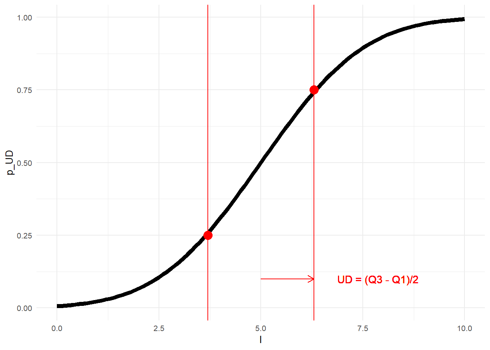
Tip pro: Aunque durante ésta clase hemos establecido el UD como la semidiferencia entre el Q3 y el Q1, normalmente se establece como la semidiferencia entre el 84 y el 16 % de probabilidad, ya que, de esta manera el umbral diferencial corresponde directamente con la desviación estándar de la curva normal asociada.
Como hemos podido observar en la anterior curva, en definitiva, el Umbral Diferencial se trata de una medida sobre el rango de intensidades que genera dudas al participante u observador sobre cómo categorizar la intensidad de un estímulo debido al ruido en la medida/respuesta. De esta manera, podemos visualizar diferentes niveles de sensibilidad a una modalidad sensorial según lo amplio que sea este rango.
Con el umbral diferencial podemos obtener varios índices de sensibilidad a un estímulo:
Igual que hacíamos con el UA, podemos calcular un índice de sensibilidad de discriminación -> S = 1 / UD.
- De esta manera, un observador con un UD de 2.5 será más sensible que uno que presenta un UD de 6.
Constante (k) o fracción de Weber:
Como se mencionó anteriormente, una de las utilidades de calcular la constante de la ley de Weber es que nos permite comparar entre diferentes modadlidades sensoriales. Si recordamos, Weber describió la comparación entre pesos con una \(k_{peso} = 0.03\).
Repaso:
Asumiendo que se cumple la Ley de Weber: ¿Qué modalidad sensorial es más precisa?
- \(k_{velocidad} = 0.1\) o \(k_{peso} = 0.03\)
¿Qué velocidad debería alcanzar una pelota para ser percibida como más rápida/lenta que una pelota que se mueve a 28 m/s?
¿Cuánto debe pesar una pelota para ser percibida como más pesada/ligera que una pelota que pesa 300 g?
Utilizando Logit para linealizar
Uno de los problemas que presentan las curvas anteriores es que no son fáciles de interpretar, ya extraer puntos concretos de la curva (calcular la intesidad asociada a un cuartil) requiere de un ajuste no lineal. Sin embargo, podemos utilizar ciertos trucos matemáticos para facilitarnos esta misión. Para ello, vamos a utilizar una transformación de los datos anteriores con el objetivo de pasar de una curva con forma sigmoidal a una función lineal. Para ello, vamos a transformar las probabilidades en lo que se denomina unidades logit aplicando la siguiente fórmula:
\[\begin{equation} \label{logit} \ logit(p) = ln(\frac{p}{1-p}) \end{equation}\]En ésta fórmula, \(p\) es la probabilidad asociada a cierta respuesta para una intensidad determinada y \(ln\) el logaritmo neperiano o natural (no confundir con el logaritmo en base 10 o \(log\)). Si aplicamos esta fórmula a la curva anterior obtenemos una aproximación funcional a una función lineal (como se puede ver en los puntos de la figura más abajo, no es compleeeeeetamente lineal, pero es una aproximación funcional bastante útil).
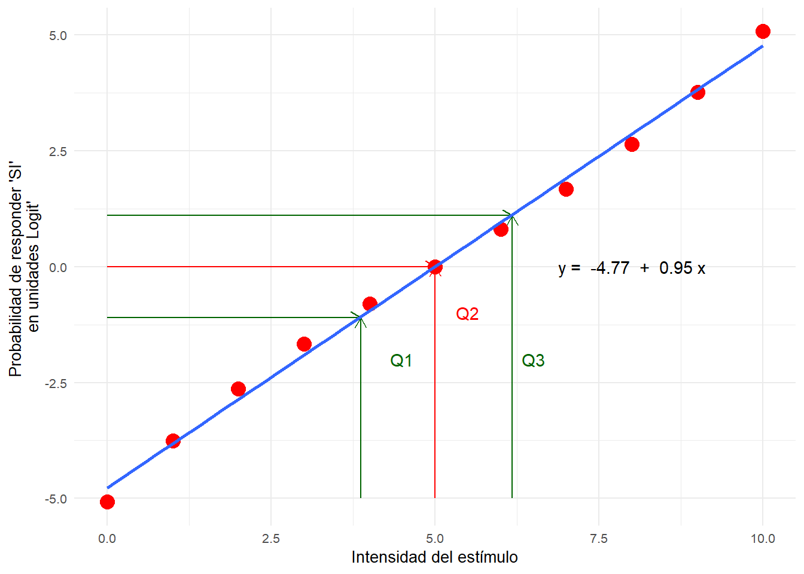
Si aplicamos una regresión lineal a los puntos anteriores mediante sistemas como SPSS, Excel, MatLab o R (o incluso a mano si diesemos esta clase 10 años antes), podemos obtener la probabilidad asociada a cualquier intensidad sustituyendo en la ecuación de la recta.
Aquí va un ejemplo sobre cómo calcular el UA y el UD:
UA: definido como la proporción del 50% de responder sí, es decir, el segundo cuartil o Q2 (UA), corresponde a un apuntuación Logit( p = 0.5 ) = ln ( 0.5/(1-0.5) ) = 0.
Si calculamos el ajuste lineal de la recta de a las puntuaciones Logit obtenemos una recta descrita por la siguiente ecuación: \(y = x*a + b\)
Que es lo mismo que esto: \(log(p) = x*a + b\)
Dado que \(logit(p=0.5) = 0\), sustituimos en nuestro ajuste lineal: $ 0 = ax + b$
Por lo que para calcular la intensidad asociada a la proporción por la que hemos sustituido en y (x), en este caso el UA, sólo necesitamos resolver esta ecuación utilizando los datos del intercepto y la pendiente.
\(UA = -b / a\) o \(UA = -intercepto/pendiente\)
UD: de la misma manera, podemos calcular qué proporción corresponde al Q1 y Q3 y obtener el UD.
\(logit(p = 0.25) = ln(0.25/(1-0.25))\)
\(logit(p = 0.75) = ln(0.75/(1-0.75))\)
\(Q1 = (logit(0.25) - b) / a\)
\(Q3 = (logit(0.75) - b) / a\)
UD = (Q3 - Q1) /2
Resumen hasta el momento
Hemos estudiado dos tipos diferentes de umbrales:
El Umbral Absoluto responde a la pregunta de a qué intensidad de un estímulo un observador es capaz de verlo.
Se calcula como el segundo cuartil de una curva sigmoide (cumulativa gaussiana). Para calcularlo:
Transformamos las probabilidades medias de detección de cada nivel de intensidad a valores logit \(logit(p) = ln(p(I)/(1-p(I)))\).
Aplicamos una regresión lineal a los valores logit vs las intensidades del estímulo.
El UA se puede calcular con la siguiente fórmula: \(UA = -intercepto/pendiente\) o \(UA = -b/a\).
El Umbral Diferencial responde a la pregunta de si el estímulo de comparación es diferente (en una dirección determinada) al estímulo de referencia.
Nos da una curva sigmoidal con la probabilidad de que ocurra tal evento. Para calcularlo:
Transformamos las probabilidades medias de discriminación de cada nivel de intensidad a valores logit \(logit(p) = ln(p(I)/(1-p(I)))\).
Calculamos la semidiferencia entre el Q3 y el Q1 utilizando valores logit. \(UD = (Q3 - Q1)/2\).
$ Q1 = (logit(0.25) - b)/a $
$ Q3 = (logit(0.75) - b)/a $
Ley de Weber-Fechner
Según Fechner el Umbral Absoluto sería un nivel de Sensación 0 dentro de una escala de sensaciones psicofísicas. Basándose en la Ley de Weber, afirmó que aunque la diferencia en intensidad requerida para percibir un estímulo como diferente de otro era proporcional a la intensidad del mismo, el cambio en la sensación que estas producían era idéntico. Fechner asumía que la aunque la intensidad de un estímulo tuviese que ser crecientemente mayor para ser pecibido como diferente, la sensación producida era de escala ordinal. En este sentido, si atendemos a la fórmula de la Ley de Weber:
\(k = \frac{UD}{E_{Ref}}\)
\(k = \frac{0.4}{4}=0.1\)
Dada la anterior igualdad sabemos que, en este ejemplo, la diferencia mínima perceptible (DMP) es igual a…
- \(k * E_{Ref} = MDP\)
Por lo que, para distinguir un estímulo de el Umbral Absoluto, éste debe aumentar su intensidad en:
$ k UA = MDP 0.1 4 = 0.4$
$ 0.1 4 = 0.4 $
Haciendo estos cálculos para intensidades crecientes sucesivas obtenemos la siguiente tabla:
| Intensidad del estímulo | Sensación | \(\Delta E\) | Weber Fraction |
|---|---|---|---|
| 4.000 | 0 | 0.400 | 0.1 |
| 4.400 | 1 | 0.440 | 0.1 |
| 4.840 | 2 | 0.484 | 0.1 |
| 5.324 | 3 | 0.532 | 0.1 |
| 5.856 | 4 | 0.586 | 0.1 |
| 6.442 | 5 | 0.644 | 0.1 |
| 7.086 | 6 | 0.709 | 0.1 |
| 7.795 | 7 | 0.779 | 0.1 |
| 8.574 | 8 | 0.857 | 0.1 |
| 9.432 | 9 | 0.943 | 0.1 |
En esta tabla se puede ver que aunque la sensación producida aumenta una sóla unidad en cada paso, el cambio necesario en la intensidad del estímulo es cada vez mayor. De manera que si ploteamos los anteriores datos tenemos la siguiente gráfica:
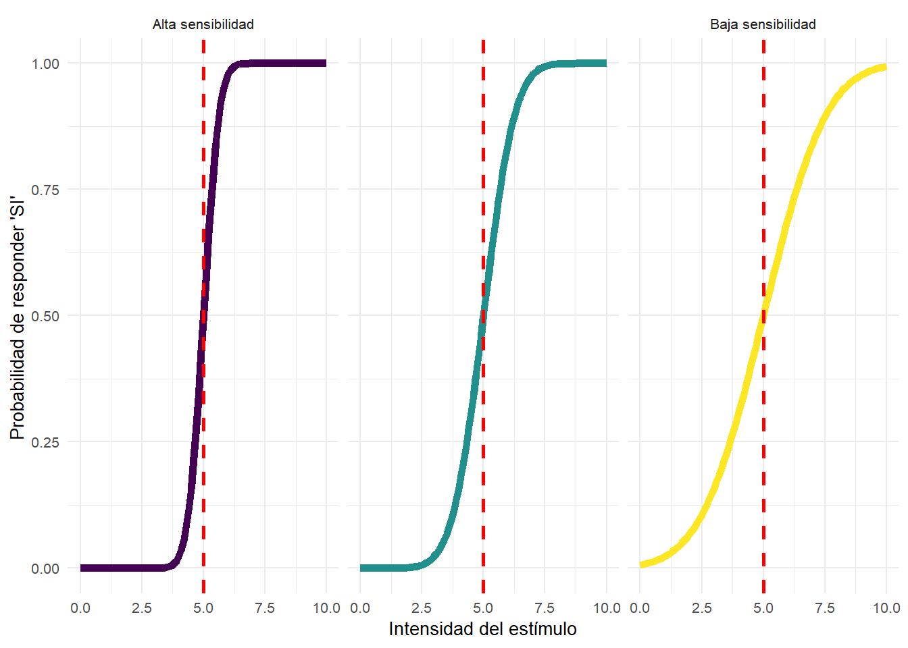
Como podemos ver, la relación existente entre sensación percibida y la intensidad del estímulo sigue una relación logarítimica. Para facilitar su interpretación, Fechner propuso la llamada como Ley de Weber-Fechner. Según esta ley, la sensación percibida sería proporcional al logaritmo en base 10 del estímulo multiplicado por una constante. De esta manera, la relación entre intensidad y sensación percibida pasa de una relación logarítmica a una relación lineal:
\[\begin{equation} \label{Weber-Fechner} \ S = K*log(E) \end{equation}\]
Práctica 2B: Obtención del umbral de detección de la colinealidad
Fechner estaba interesado en poder establecer una escala de correspondencias psicofísicas. Esta escala se empezaría siempre a contabilizar desde la intensidad mínima que es posible percibir un 50% de las veces. Punto que denominaría como Umbral Absoluto.
Vamos a ver cómo podemos aplicar esto a la vida real utilizando como ejemplo la agudeza visual…
¿Qué es la agudeza visual?
Agudeza visual (AV): Separación mínima entre dos puntos, dos líneas o los extremos de un aro abierto, que un observador es capaz de detectar. También denominada resolución espacial del procesamiento visual.
Depende de la distancia inter-receptores.
En ocasiones se le llama minimum separable.
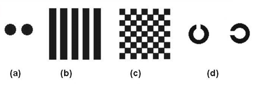
La agudeza visual varía dependiendo de la densidad de conos o bastones, disminuyendo a medida que nos alejamos de la fóvea. En optometría la AV normal se establece en 1 min arc.
Como se puede notar por las unidades anteriores (notación sexagesimal: grados, minutos y segundos), en un laboratorio de percepción visual, normalmente describimos las dimensiones de un objeto basándonos en el ángulo visual que arroja. ¿Por qué hacemos ésto? Fijémonos en la siguiente imágen:
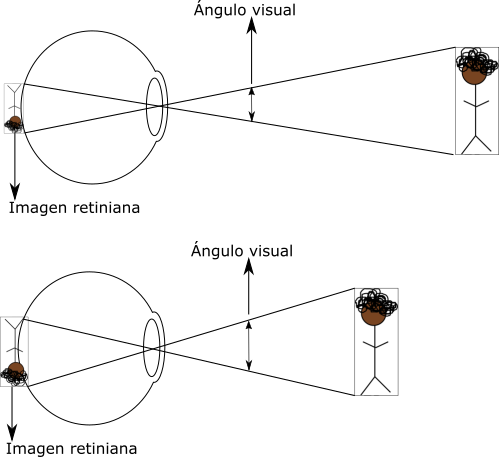
Desde un punto de vista estructural, para detectar la separación entre dos puntos, estos dos puntos han de proyectarse sobre dos fotorreceptores (conos o bastones) separados en la retina.
Curiosidad: ¿Por qué vemos en la oscuridad si la densidad de bastones es muy baja?
Como se puede ver en la figura anterior, la distibución de los conos y los bastones es un poco diferente. Los bastones se procesan en niveles intermedios de forma conjunta, es decir, varios bastones descargan en la misma célula ganglionar a diferencia de los conos cuya ratio cono/célula ganglionar es mucho más baja. De esta manera, conseguimos que con menor cantidad de células fotosensibles obtengamos una decente repuesta a bajas luminosidades sacrificando resolución espacial, es decir, reduciendo la calidad de la imagen que obtenemos. Para entendernos mejor, es como si para hacer que una imagen del móvil sea un poco más brillante, tuviesemos que reducir los megapíxeles de 16 a 1.3. Por otra parte, y aunque parezca contraintuitivo, esto también beneficia al sistema visual ya que, reduce la cantidad de información que tiene que procesar haciendo que sea más manejable. ¿Quién no ha bajado la resolución de un vídeo para poder grabar más minutos?
La agudeza visual se mide utilizando los conocidos como Optotipos. Este tipo de pruebas se puden encontrar en el oculista, en el optometrista o en internet fácilmente.
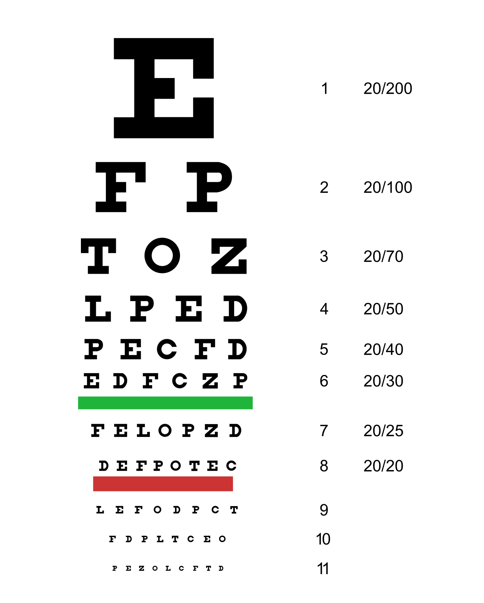
Cuando realizamos este test (Test de Snellen), buscamos obtener una visión 20/20. Esto significa que el observador ve sin problemas a 20 pies lo que una persona normal (signifique normal lo que signifique) vería sin problemas a 20 pies. Al realizar este test se pide al observador que indicque las letras fila a fila, siendo las letras cada fila más pequeñas.
Miniprepaso: Siendo éste el método que utiliza el test de Snellen, ¿de qué tipo de método psicofísico se trata?
Sin embargo, se ha observado en la literatura científica que aunque el límite estructural para detectar la separación entre dos puntos está determinado por la separación de los receptores, hay algunos tipos especiales de agudeza visual que superan los límites estructurales. Un ejemplo de esto sería la Agudeza de Vernier.
Umbral Absoluto de la Agudeza de Vernier
La Agudeza de Vernier es un tipo de la hiperagudeza visual que mide la capacidad para detectar el desalineamiento entre dos segmentos de lineas o enrejados, siendo esta de 5 a 10 veces mas alta que la agudeza visual.
Hiperagudeza Visual: los des-alineamientos pueden ser inferiores tanto al diámetro de los fotoreceptores como a la distancia entre ellos.

Para explorar si esto es realmente así, se ha planteado la primera práctica de este bloque. En ella, se estimará el Umbral Absoluto de la Agudeza de Vernier y se aplicarán parte de los conocimientos vistos en la parte teórica de la práctica sobre el tratamiento de los datos obtenidos. De hecho, no sólo exploraremos cuál es la agudeza de Vernier, sino también si existe alguna orientación preferente (comunmente denominado como efecto oblicuo). Es decir, si la Agudeza de Vernier es mayor para líneas orientadas horizontalmente o a diferentes ángulos.
Para realizar el experimento, tendréis que descargar el ejecutable que se encuentra en el campus virtual: Práctica 2 Cálculo del UA de la agudeza de Vernier
La hipótesis de partida será la siguiente:
- Conforme se aleja la orientación de las líneas de la orientación cardinal (horizontal), se deteriora la Agudeza de Vernier. Es decir:
Metodología
Secuencia Experimental
La tarea del participante consistirá en pulsar el botón del ratón:
Botón izquierdo si se detecta que SON COLINEALES.
Botón derecho si NO SON COLINEALES.
En total tendremos 180 ensayos:
\[\begin{equation} \label{trials_p2a} \ 9~separaciones \times 4~orientaciones \times 5~repeticiones = 180~ensayos~(trials) \end{equation}\]Variables
Variables independientes (VI):
Separación vertical (0-8 píxels).
Orientación líneas de Vernier (0 - 15 - 30 - 45 deg.).
Variable dependiente (VD), aquella que manipula el observador:
- Juicio del sujeto (proporción de desalineamientos, 1: “Desalineado”, 0: “Alineado”)
Resultados
Antes de calcular los resultados recordemos qué es el Umbral Absoluto:
- Umbral Absoluto: nivel estimular mínimo para detectar un estímulo al nivel del azar, es decir, el 50% de las veces.
Después de realizar el experimento, debemos calcular la media de síes y noes por participante para cada combinación de variables independientes, es decir, píxeles de separación y ángulo de orientación. Una vez obtenidas las medias, obtendremos una tabla parecida a la siguiente:
| Colinealidad | 0 deg. | 15 deg. | 30 deg. | 45 deg. |
|---|---|---|---|---|
| 0 | 0.0 | 0.2 | 0.0 | 0.2 |
| 1 | 0.4 | 0.2 | 0.4 | 0.0 |
| 2 | 0.4 | 0.2 | 0.4 | 0.2 |
| 3 | 0.4 | 0.2 | 0.4 | 0.2 |
| 4 | 0.8 | 0.6 | 0.4 | 0.2 |
| 5 | 0.8 | 0.6 | 0.2 | 0.4 |
| 6 | 1.0 | 0.8 | 0.4 | 0.4 |
| 7 | 1.0 | 0.6 | 0.8 | 0.6 |
| 8 | 1.0 | 1.0 | 1.0 | 1.0 |
Si graficamos (o en espanglish, ploteamos) obtenemos la siguiente figura:

Sin embargo, calcular el Umbral Absoluto todavía es un poco difícil. Si recordamos bien, el UA estaba definido como el nivel de intensidad que da lugar a un 50% de respuestas de sí, lo que equivaldría a 0.5. Una solución sencilla para calcular un valor aproximado del Umbral Absoluto sería realizar una regla de tres. Si nos fijamos por ejemplo en la orientación de 30 grados, podemos asumir que el UA está entre 6 y 7 píxels de diferencia (rango de probabilidad de entre 0.4 y 0.8, ya que incluye el 0.5). Teniendo esto en cuenta, utilizaremos una regla de 3 para obtener una estimación del UA:
Si calculamos de esta manera los cuatro UA obtenemos que:
UA 0: 3.25
UA 15: 3.75
UA 30: 6.25
UA 45: 6.5
Por lo tanto, obtenemos que: Conforme aumenta la inclinación, también aumenta el UA de detección de la co-linealidad. Es decir, se detecta peor la co-linealidad cuanto más inclinadas son las líneas.
\[\begin{equation} \label{p2a} \ UA_{0} < UA_{15} < UA_{30} <= UA_{45} \end{equation}\]Utilizando Logit para linealizar y obtener UA
Ya tenemos una estimaación utilizando una regla de 3 para obtener el UA, sin embargo, en la sección de teoría, hemos visto que podemos utilizar una transformación Logit a las puntuaciones de probabilidad para linealizar los datos y obtener una estimación de forma rápida y exacta del UA. Por lo tanto, lo primero que tenemos que hacer es transformar las puntuaciones de probabilidad en valores Logit.
| Colinealidad | 0 deg. | 15 deg. | 30 deg. | 45 deg. |
|---|---|---|---|---|
| 0 | -4.60 | -1.39 | -4.60 | -1.39 |
| 1 | -0.41 | -1.39 | -0.41 | -4.60 |
| 2 | -0.41 | -1.39 | -0.41 | -1.39 |
| 3 | -0.41 | -1.39 | -0.41 | -1.39 |
| 4 | 1.39 | 0.41 | -0.41 | -1.39 |
| 5 | 1.39 | 0.41 | -1.39 | -0.41 |
| 6 | 4.60 | 1.39 | -0.41 | -0.41 |
| 7 | 4.60 | 0.41 | 1.39 | 0.41 |
| 8 | 4.60 | 4.60 | 4.60 | 4.60 |
A estos valores Logit les aplicamos un modelo lineal para obtener intercepto y pendiente y calculamos el Umbral absoluto a partir de la siguiente fórmula:
$UA = -b/a $
\(UA = -intercepto/pendiente\)
| Intercepto | Pendiente | Colinealidad | Umbral Absoluto |
|---|---|---|---|
| -3.04 | 1.06 | 0_deg | 2.87 |
| -2.26 | 0.61 | 15_deg | 3.70 |
| -2.97 | 0.69 | 30_deg | 4.33 |
| -3.45 | 0.70 | 45_deg | 4.95 |
Como podemos ver, los resultados son bastante diferentes a los encontrados utilizando una aproximación a partir de una regla de 3. Aunque la regla de 3 sea más sencilla, se prefiere el método a partir de la transformación en puntuaciones Logit porque asume que la curva en la que se distribuyen las puntuaciones de probabilidad provienen de una curva sigmoidal típica de las funciones psicométricas. De esta manera, conseguimos un resutado que no sólo es más realista, sino que es más válido bajo los supuestos estadísticos sobre los que se fundamenta la Psicofísica.
Práctica 2C: Detección del Umbral de discriminación (Umbral diferencial) de la Colinealidad
Objetivos
Aprender a utilizar los métodos psicofísicos clásicos: Método de los estímulos constantes (calcular el UD).
Profundizar en la noción de Agudeza Visual (AV).
Pregunta experimental: ¿cuál es la mínima diferencia en no-colinealidad que somos capaces de discriminar?
- Para responder a esta pregunta, sólo nos centraremos en calcular el UD para la orientación de 45º.
Metodología
Para realizar el experimento, tendréis que descargar el ejecutable que se encuentra en el campus virtual: Práctica 2 Cálculo del UD de la agudeza de Vernier
Estímulos
Dado que la pregunta es un poco distinta utilizaremos un set diferente de estímulo:
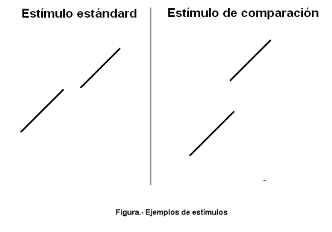
Instrucciones
Las instrucciones que se le darán a los participantes son las siguientes:
“Vamos a evaluar tu precisión en Agudeza de Vernier. En esta prueba se te mostraran, en cada ensayo, dos estímulos (pares de lineas de Vernier). Al primero le llamamos estímulo estándar y éste se mantiene constante toda la prueba. Al segundo le llamamos estímulo de comparación y variará en la dimensión estudiada (separación vertical) para cada ensayo.”
La tarea del sujeto consiste en presionar:
Botón izquierdo si la separación del estímulo de comparación es menor que la del estímulo estándar.
Botón derecho del ratón si la separación del estímulo de comparación es mayor que la del estímulo estándar.
** Secuencia experimental**
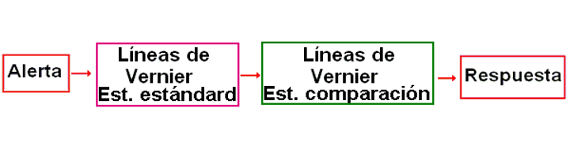
En total tendremos 90 ensayos:
\[\begin{equation} \label{trials_p2b} \ 9~separaciones \times 10~repeticiones = 90~ensayos~(trials) \end{equation}\]Variables
Variables independientes (VI):
Separación del estímulo estandar (20 píxels).
Separación estímulo de comparación (12, 14, 16, 18, 20, 22, 24, 26, 28).
Variable dependiente (VD), aquella que manipula el observador:
Juicio de discriminación de separación
Error = Valor asignado - Valor real
Resultados
Antes de obtener los resultados recordemos qué es el Umbral Diferencial:
- Umbral Diferencial: Nivel estimular necesario para discriminar diferencias entre estímulos. Se calcula a partir de la semidiferencia entre el Q3 (0.75%) y el Q1 (0.25%).
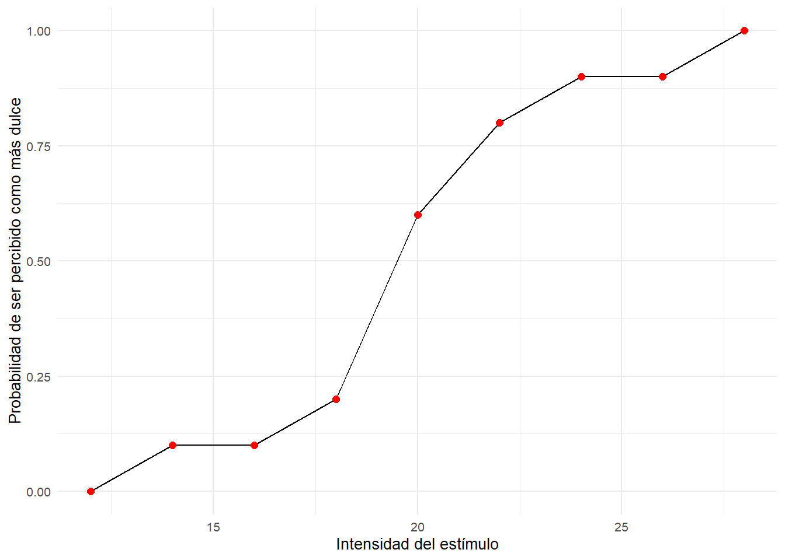
Después de obtener estas puntuaciones de probabilidad a cada una de las intensidades, transformaremos las mismas en puntuaciones Logit y obtendremos una recta de ajuste lineal para obtener pendiente e intercepto con los que poder calcular el Umbral Diferencial.
| Separacion | Probabiliad asociada | Probabilidad Logit |
|---|---|---|
| 12 | 0.01 | -4.60 |
| 14 | 0.10 | -2.20 |
| 16 | 0.10 | -2.20 |
| 18 | 0.20 | -1.39 |
| 20 | 0.60 | 0.41 |
| 22 | 0.80 | 1.39 |
| 24 | 0.90 | 2.20 |
| 26 | 0.90 | 2.20 |
| 28 | 0.99 | 4.60 |
A partir de estas puntuaciones logit podemos obtener el Q1 y el Q3:
\(Q1 = \frac{logit_{0.25}-Intercepto}{Pendiente}\)
\(Q3 = \frac{logit_{0.75}-Intercepto}{Pendiente}\)
Dado que el Umbral diferencial se define como la semidiferencia entre el tercer y el primer cuartil:
\(UD = \frac{Q3 - Q1}{2}\)
| Intercepto | Pendiente | Q3 | Q1 | Umbral Diferencial |
|---|---|---|---|---|
| -10.21 | 0.51 | 22.06 | 17.77 | 2.14 |
En éste caso, el UD de la colinealidad para la orientación de 45 grados y un estímulo de referencia de 20 píxels de diferencia es 2.14.
Pero, ¿qué pasaría si necesitasemos calcular una separación entre estas líneas que se viera como aún más separadas que la obtenida?
- Es decir: \(Sensación = S + 2\)
Dado que tenemos el UD podemos utilizar la ley de Weber para obtener qué separación entre ambas líneas se vería como aún más separadas:
Para calcular cuál tendría que ser la separación entre ambas, sera conveniente antes calcular la Weber Fraction o \(k\):
- \(k = \frac{UD}{E_{Ref.}}\)
Para repasar:
| Separacion | Sensación | \(\Delta Separación\) |
|---|---|---|
| 20 | X | 20 * k = 2.14 |
| 22.14 | X + 1 | 22.14 * k = ?? |
| ?? | X + 2 | ?? * k = ?? |
Práctica 3: Estimación de la Claridad (psicofísica de Stevens)
Conceptos previos
Ley potencial de Stevens
Si recordamos lo visto en la anterior práctica, la ley de Weber-Fechner implicaba que la relación entre un estímulo y su sensación percibida era de tipo logarítmico:
\[\begin{equation} \label{Weber_Fechner} \ S = K * log(E) \end{equation}\]No obstante, hay situaciones en las que este tipo de relación no se sigue. El hecho de que no todos los tipos de estimulaciones tengan una misma correspondencia psicofísica tiene un efecto capital en la supervivencia de un organismo. Por ejemplo, puede ser útil no ser sensible a ciertos niveles bajos de presión mecánica sobre la piel (dado que los sufrimos durante las 24 horas) sin que esto suponga un peligro para el organismo. Este tipo de estimulación es un típico ejemplo de correspondencia psicofísica que se comporta de forma exponencial. Por otra parte, hay situaciones en las que no es adaptativo reaccionar a cambios grandes en la estimulación. Es el caso de la iluminación. Para un organismo como el ser humano es mucho más útil ser sensible a cambios en estimulaciones a bajo nivel de intensidad, para poder orientarse en el espacio. Sin embargo, cambios bruscos como los que se producen bajo el sol no son necesariamente útiles para el organismo, ya que recibe suficiente energía como para percibir el entorno sin problemas. Este seria un típico ejemplo de correspondencia logarítmica. Stevens se dio cuenta de esto después de una serie de esxperimentos científicos relacionados con el efecto que un shock eléctrico tenía sobre la piel, correspondiendose éste también con un típico ejemplo de relación exponencial.
Reflexionando sobre esto, Stevens se preguntó si podría existir alguna forma de generalizar la relación entre la estimulación y la sensación producida de tal manera que en una misma ecuación se recogieran relaciones lineales, logarítmicas o exponenciales.
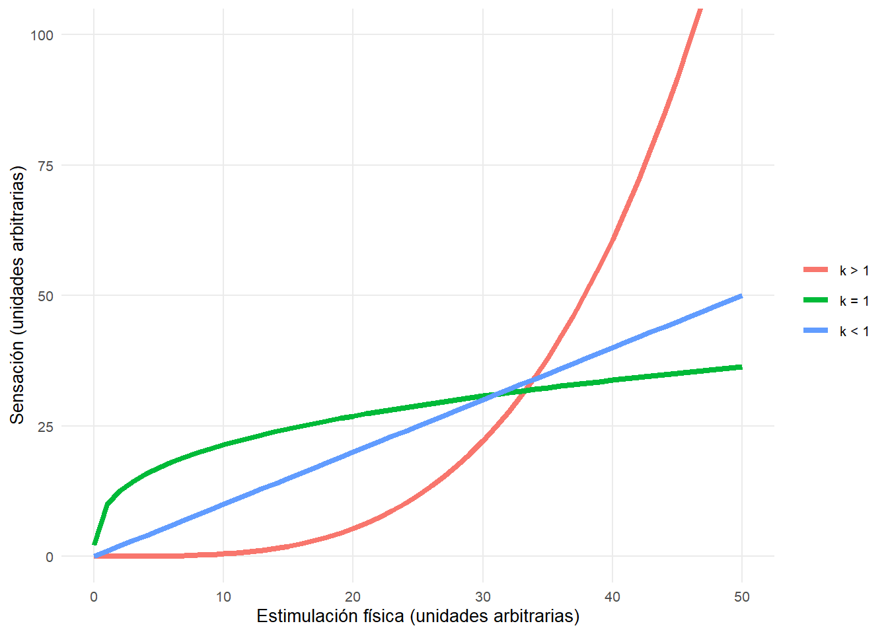
Esta generalización de correspondencias psicofísicas pasó a llamarse Ley de Stevens.
\[\begin{equation} \label{Stevens} \ S = c * E^{k} \end{equation}\]En la misma, el exponente k describe cómo sería la relación entre la sensación y la intensidad del estimulo.
k > 1: Incremento expansivo
k = 1: Incremento lineal
k < 1: Incremento compresivo
Por su parte, la c sería una constante que describiría la sensación en ausencia de estimulación. El problema con estas curvas es que son difíciles de analizar. Lo interesante de la ley de Stevens es que si aplicamos una transoformación log-log, es decir, aplicamos logaritmos a todo lo que tenemos a la izquierda y a la derecha de la ecuación podemos linearizar las curvas que describe. Es ese caso, obtenemos la siguiente igualdad:
\[\begin{equation} \label{Log_Log_Stevens} \ log(S) = log(c) * n * log(E) \end{equation}\]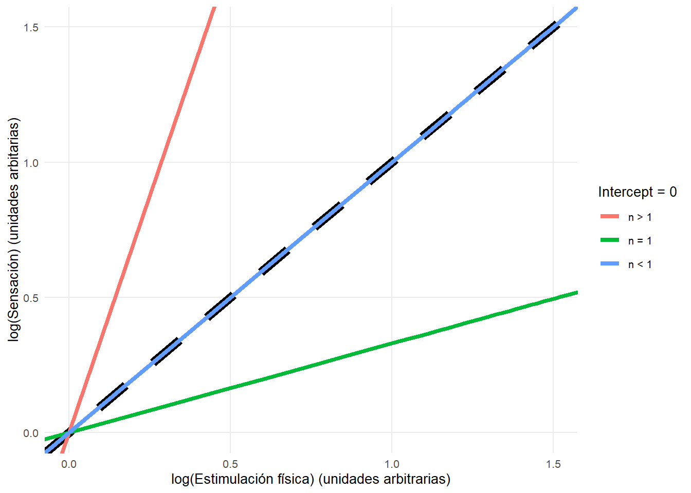
Parte práctica: Estimación de la Claridad (psicofísica de Stevens)
Para realizar el experimento, tendréis que descargar el ejecutable que se encuentra en el campus virtual: Práctica 3 Estimación de la claridad (Ley de Stevens)
En esta práctica pondremos en práctica los conocimientos que hemos aprendido previamente sobre la Ley de Weber-Fechner y la Ley de Stevens.
Pregunta:
¿Cuál es la exactitud en nuestras estimaciones de claridad? Es decir, ¿cómo es nuestra habilidad para juzgar la reflectancia?
Esto nos indicará qué ajuste tienen los sensores de la reflectancia, es decir, los bastones con respecto a la luminancia. Por tanto, la relación funcional entre brillo y la luminancia (Recuerdas la diferencia que había entre ambas?).
Hipótesis:
En esta Práctica no pretendemos verificar ninguna hipótesis. No hay hipótesis experimental. Nuestro objetivo se centra en la construcción de una escala de percepción de la claridad, haciendo uso de uno de los métodos directos de estimación de cantidades propuestos por S.S. Stevens.
Metodología
Estímulos: A modo de referencia inicial, se muestran las imágenes de 10 niveles de claridad (0-225) en una imagen.
Instrucciones: El experimento consiste en la presentación de una serie de cuadros de diferente claridad en la zona central de la pantalla, a los que debes asignar un Número comprendido entre 0‑9 (Escala de claridad).
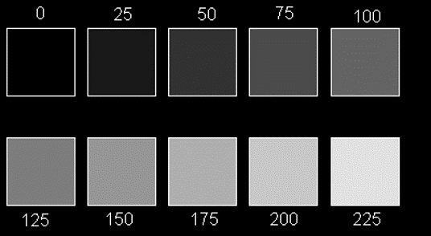
Para pensar: ¿Por qué no debemos realizar el experimento utilizando un fondo gris? ¿De qué color debería ser el fondo para realizarlo en las condiciones más óptimas?
Variables
Variables independientes (VI):
- Reflectancia (0, 25, 50, 75, 100, 125, 150, 175, 200, 225)
Variable dependiente (VD), aquella que manipula el observador:
- Valor asignado (Claridad percibida).
En total tendremos 50 ensayos:
\[\begin{equation} \label{trials_p3} \ 10~reflectancias \times 5~repeticiones = 50~ensayos~(trials) \end{equation}\]Resultados
ATENCIÓN!!!!
Hay un bug en los resultados del experimento, por lo que lass respuestas de 0, son codificadas como 1, las de 1 como 2 y así sucesivamente, por lo que lo primer que tenemos que hacer es restar 1 al valor asignado.
Recuerda!!!: El logaritmo de 0 es igual a Infinito, por lo tanto, sustituimos valores negativos (maldito bug) y el 0 por 0.01 antes de calcular su logaritmo.
| Claridad | Asign | error_est |
|---|---|---|
| 0.01 | 0.406 | -0.396 |
| 1.00 | 1.200 | -0.200 |
| 2.00 | 2.000 | 0.000 |
| 3.00 | 2.800 | 0.200 |
| 4.00 | 3.200 | 0.800 |
| 5.00 | 4.000 | 1.000 |
| 6.00 | 4.600 | 1.400 |
| 7.00 | 6.400 | 0.600 |
| 8.00 | 6.400 | 1.600 |
| 9.00 | 7.000 | 2.000 |
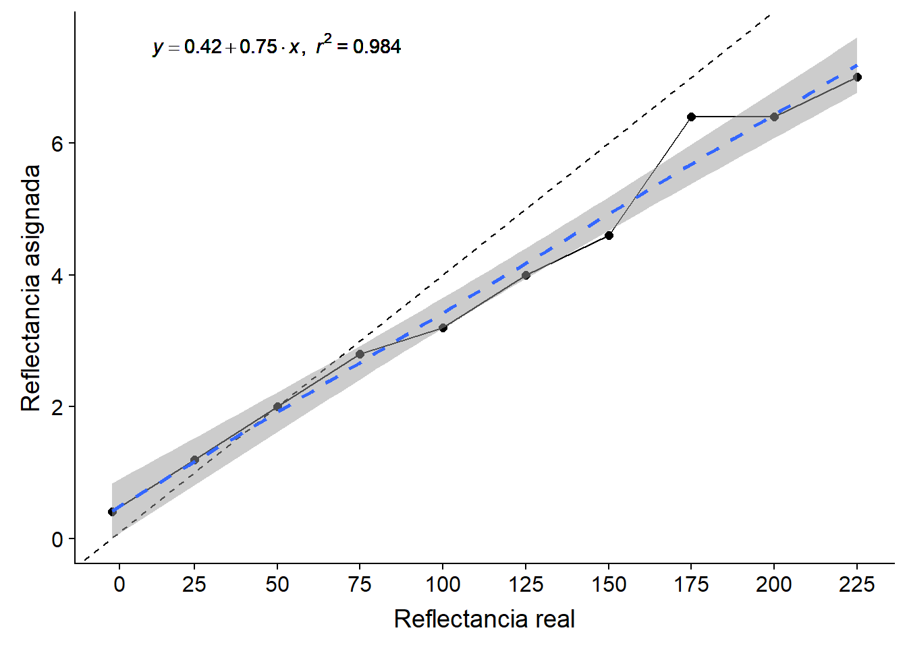
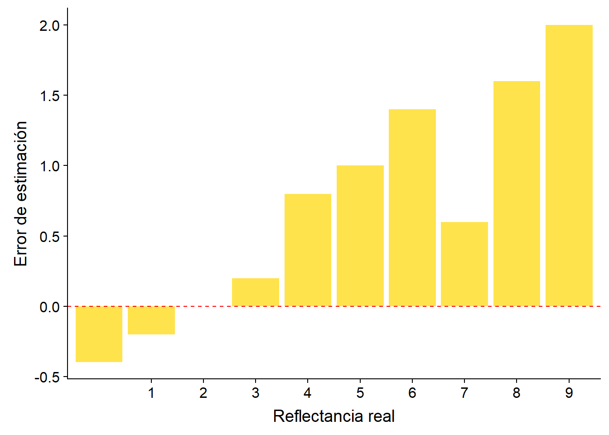
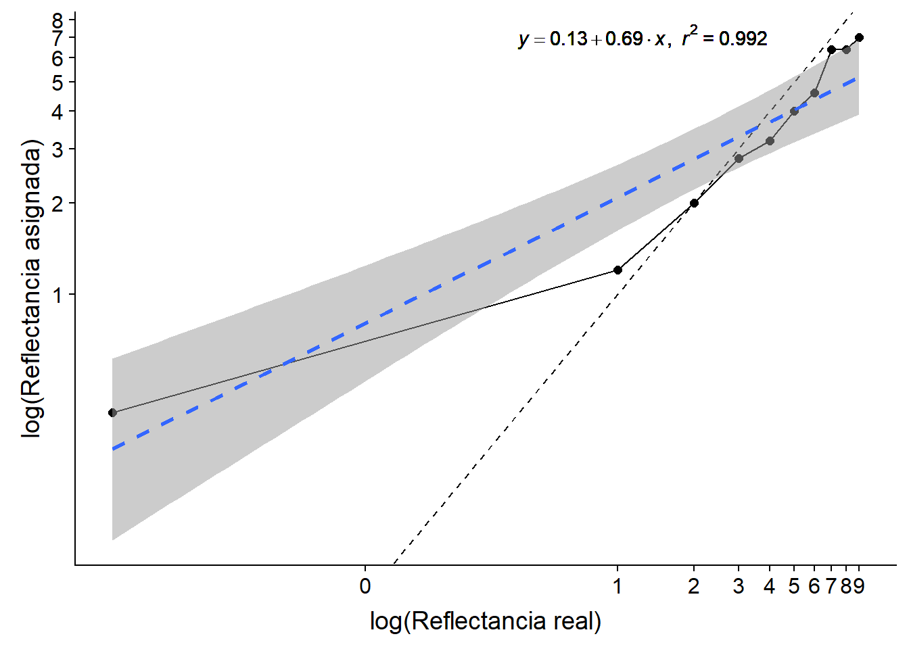
¿Cómo se traducen estos exponentes en la fórmula de Stevens?
\(c = 10^{\beta_{0}}\)
\(n\) = \(\beta_{1}\)
En el caso anterior tendramos que:
\(S = 10^{0.131} * E^{0.688}\)
Si ahora calculamos a partir de la Ley de Stevens el brillo percibido predicho obtenemos la siguiente curva:

Para repasar:
Ejercicios para resolver en clase:
¿Cuál es la forma de la correspondencia psicofísica que describe la ley de Fechner? ¿y la de Stevens?
¿Qué método de estudio utiliza la psicofísica de Stevens?
¿Con qué objetivo aparece la ley de Stevens?
¿Por qué cada tipo de estimulación describe una curva diferente?
¿Qué elemento en la ley de Stevens indica la forma de la relación entre estímulo y sensación?
¿Qué diferencia hay entre brillo y reflectancia?
¿Qué fotoreceptores son los principales encargados del procesamiento de la luminanciao?
¿Qué tipo de curva de respuesta encajaría mejor con la respuesta a la luminancia?
¿Cómo sería su exponente en la ley de Stevens?
Práctica 4: Precedencia perceptiva “Global-to-Local”
Índice de objetivos
- Mostrar la existencia de dos tipos de procesamiento de la información:
Según la dirección del procesamiento cognitivo: Top-down vs. Bottom-Up
Según la dirección del reconocimiento de patrones: Global-Local vs. Local-Global
Comprobar los resultados de la hipótesis de Navon (1977)
Determinar qué factores pueden influir en el fenómeno de la precedencia perceptiva.
Procesamiento visual
Desde la descripción por parte de Hubel y Wiesel de la respuesta selectiva de ciertas neuronas a estimulos orientados en una determinada dirección, la metáfora computacional ha servido para decribir y explicar el procesamiento de los estímulos visuales. Esta expicación normalmente ha sido segregada en dos etapas diferenciadas:
Ulric Neisser (1969) describió el proceso perceptivo como un proceso dividido en dos fases que se desarrollan de forma secuencial, es decir, una después de la otra. En primer lugar, ocurriria una primera fase pre-atencional. En esta fase se desarrollaría un procesamiento automático y paralelo de cada una de las características o elementos básicos de un estímulo o imagen. Posteriormente, se desarrolaría una fase atencional en la cual, de forma consciente, se podría acceder a cada una de las caracteristicas o elementos que componen la imagen de forma consciente y controlada.
De forma parecida, David Marr (1982) propuso que el procesamiento visual se dividiría en un procesaamiento inicial tosco en forma de procesamiento primario a partir de una matriz primaria de diferentes intensidaddes lumínicas. Posteriormente, se formaría una imagen 2D a partir de los elementos básicos de la imagen. Posteriormente, se produciría un procesamiento tardío formando una imagen 3D a partir de las imagenes 2D que proporcionan las imagenes retinianas.
Por su parte, Simon Ullman (1995) propuso que el procesamiento de la información visual se realizaría en dos etpapas o fases. La primera, una etapa de bajo nivel, en la cual se produce un análisis automático e inconsciente de la información para el cual no es necesaria ni la consciencia, heurísticos ni conocimientos previos. Posteriormente se producía un procesamiento de alto nivel en el cual el flujo atencional y de selección de información dentro de la información visual está sesgado y seleccioando por la atención, la cual estaría a su vez guiada por el conocimiento previo y heurísticos requiriendo de una maor carga atenccional y recursos.
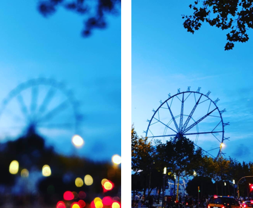
Como podemos ver, aunque las tres explicaciones ponen énfasis en diferentes aspectos del proceso perceptivo, las tres comparten el hecho de que estas dos fases de procesamiento se producen de forma secuencial y no paralela.
Hay dos modelos básicos defendidendo cada postura:
Modelo fisiologicista
Modelo basado en las estudios de Hubel & Wiesel en los cuales se postularía, que dado que el flujo de información va de lo local a lo global, lo lógico sería que se procese de forma primaria los elementos locales a los globales (Local-to-Global).
Dificultades del modelo fisiologicista
Presenta problemas para explicar cómo somos capaces de reconocer estímulos globales como puede ser una cara a partir de estímulos de caracter local.
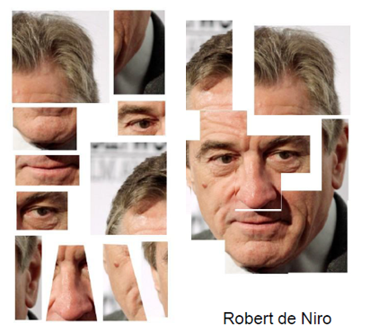
De hecho, sería posible que para unas mismas características básicas, se activaran varios conceptos globales. En este modelo, podemos ver que si acitvamos los demonios básicos basados en “/” y “", se activarían tanto la”X" como potencialmente la “A” o en menor medida la “R”.
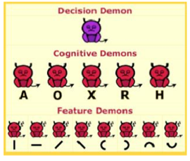
En este caso, dado que no se pueden identificar todos los elementos básicos de un elemento ocluido, sería imposible activar el elemento global.
Sería incapaz de explicar cómo somos capaces de obtener la misma representacion de una letra a partir de elementos básicos diferentes. Además, sería muy costoso entrenar a un sistema para que aprenda todas las combinaciones posibles para crear un mismo elemento.
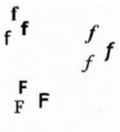
Modelo Neo-Gestaltista
Esta perspectiva propone que se procesa de forma primaria los elementos globales antes que los elementos globales, ya que serían los más salientes, sesgando la direcci´pon de la atención (Global-to-Local). Su principal problema es que es incapaz de dar una explicación (no descripción) de las leyes que preceden al agrupamiento perceptivo y segregación que dan lugar al estímulo de forma global.
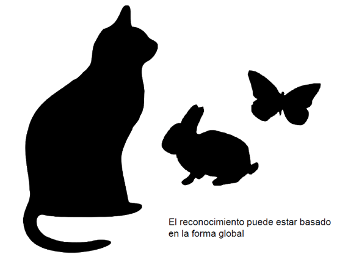
La Teoría de la Gestalt aparece en en Alemania en el primer cuarto del S. X siendo sus principales representantes:
- Max Wertheimer (1880-1943)
- Kurt Koffka (1887-1941)
- Wolfgang Köhler (1887-1967)
Esta corriente afirma que la mente configura, a través de ciertas leyes innatas, los elementos sensoriales. La organización/ agrupación es automática, inconsciente e inevitable en lo que denominan Fenómenos estructurados o Gestalten mediante unas leyes de agrupamiento perceptivo:
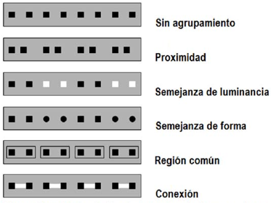
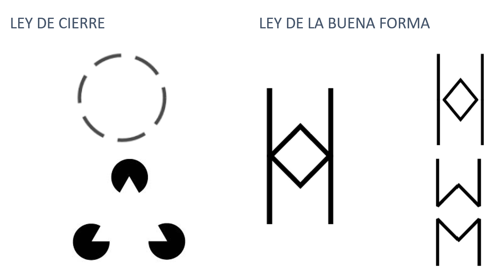
El problema de esta perspectiva es que únicamente está describiendo el percepto o sensación que tiene el observador, pero sin embargo, no da una explicación estructurada a cómo se producen dentro de un sistema cognitivo esas leyes. Esto es importante, ya que dado que, dado que sólo se trata de una perspectiva descriptiva (y no explicativa) no puede dar lugar a hipótesis que puedan ser contrastadas mediante el método científico.
Discusión
Modelos posteriores intentan dar explicación a la razón por la cual los resultados de Navon se producen:
Hoffman (1980) propuso un modelo híbrido. Hoffman propuso que hay dos canales de procesamiento que operan en paralelo:
Transmite el procesamiento Global-to-Local.
Transmite el procesamiento Local-to-Global.
En este caso, se postula que somos conscientes del procesamineto de alto nivel (procesamoento tardío), mientras que no somos conscientes del procesamiento de bano nivel o pre-atencional, es automático y guiado por los datos sensoriales.
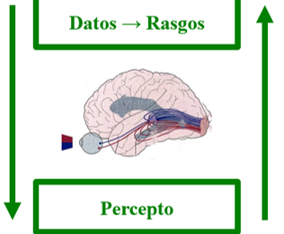
Pomerantz, J. (1981): La prioridad del procesamiento global frente al local podría depender de las condiciones visuales (tamaño de las letras y distancia de observación, etc.). A veces es más fácil procesar ‘bosques’ y, otras veces es más fácil procesar ‘árboles’.
Kinchla, R. A., & Wolfe, J. M. (1979): El tamaño del estímulo influye en que se perciba con anterioridad (precedencia) lo Global o los elementos Locales.
Martin, M. (1979a): El número de elementos locales que componen el estímulo global resulta ser un importante factor.
- Martin, M. (1979b): El fenómeno de precedencia perceptiva es afectado por la asimetría hemisférica cerebral, al menos con el tipo de estímulos lingüísticos. Este autor supone:
- Procesamiento Local: hemisferio izquierdo es superior.
- Procesamiento Global: no está fuertemente lateralizado.
- Fink, G. R., Marshall, J. C., Halligan, P. W., Frith, C. D., Frackowiak, R. S., & Dolan, R. J. (1997).
- La especialización interhemisférica parece depender del tipo de estímulo que se estudie. Por ejemplo, si se utiliza un tipo de estímulo iconográfico:
- Atención global: Activación hemisferio izquierdo.
- Atención local: Activación hemisferio derecho.

Preguntas a repasar
¿Qué dos líneas o corrientes de procesamiento existen según la dirección del procesamiento cognitivo? ¿Qué diferencia a cada una de ellas?
¿Qué dos líneas o corrientes de procesamiento se proponen de acuerdo al procesamiento de atributos perceptivos o rasgos del estímulo?
¿Qué diferencia hay entre cada una de ellas?
¿Cuáles son las principales evidencias y dificultades de cada corriente?
¿Hay una dirección de procesamiento “privilegiada” según Navon?
Para reflexionar más:
¿Es suficiente el procesamiento local-global o global-local para el reconocimiento?
¿Qué función tiene la actividad del observador?
¿Qué función tienen la atención y la consciencia?
¿Por qué es importante conocer cómo se procesa y da sentido a estímulos?
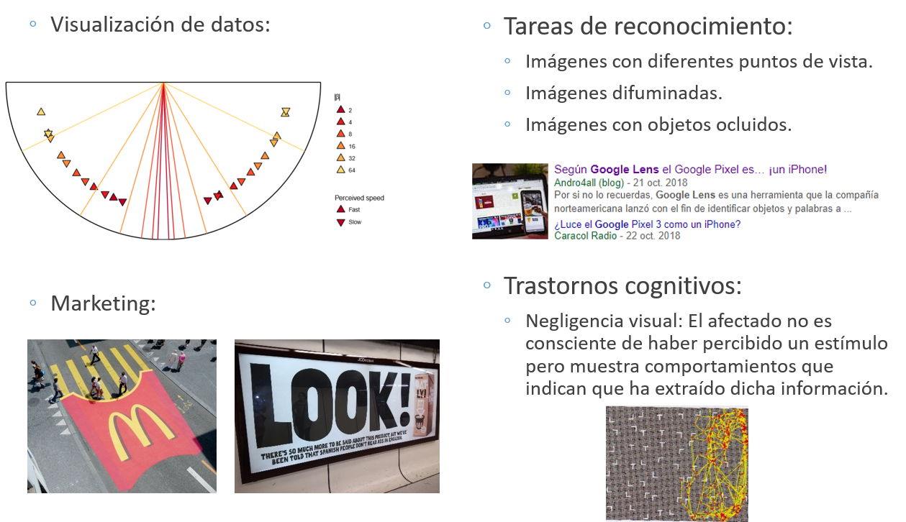
Práctica 5: Percepción de expresiones emocionales
Índice de objetivos
Comprobar si existen diferencias interhemisféricas (asimetrías cerebrales) en el procesamiento de emociones, a partir de técnicas psicofísicas (no invasivas)
Intentar replicar el estudio de Alves, Aznar-Casanova & Fukusima (2008) con rostros esquemáticos.
Introducción
Durante el transcurso de estas clases, ya hemos visto cómo el ser humano es capaz de acceder a diferente rasgos o caracterñisticas de un sistema visual de manera bastante eficiente. Aunque hasta ahora nos hemos centrado en niveles perceptivos más bajos como podrían ser luminancia, contraste, co-colinealidad, o patrones sencillos como son letras, el procesamiento de estímulos visuales complejos como puede ser un rostro es importante para entender cómo interactuamos con estímulos más válidos ecológicamente con los que nos encontramos en nuestro día a día.
En nuestra vida social nos encontramos con unos estímulos complejos como son los rostros. Continuamente estamos haciendo inferencias sobre rasgos presentes en estos rostros, y aunque normalmente son acertadas, pueden tener una gran influencia sobre nuestro comportamiento. Por ejemplo…
Desde el punto de vista de la congnición social, se ha estudiado cómo tanto seres humanos como primates indentifican y reconocer las expresiones faciles de los otros. Según Ekman (1992); pág. 171, la función primaria de las emociones sería la de movilizar a un organismo a realizar ciertas acciones para conseguir un objetivo dentro de su vida social. En su estudio de las emociones, Ekman propuso que había una serie de emociones básicas compartidas entre todas las civilizaciones humanas: ira, miedo, asco, sorpresa, alegría y tristeza. Dado que diferentes emociones dan lugar a diferentes probablidades de que se manifieste una conducta posterior, obtener una rápida identificación por parte de un observador externo de la expresión emocional (se sabe que se produce alrededor de los 100ms.) es de gran utilidad evolutiva para adaptarse al futuro comportamiento de los otros.
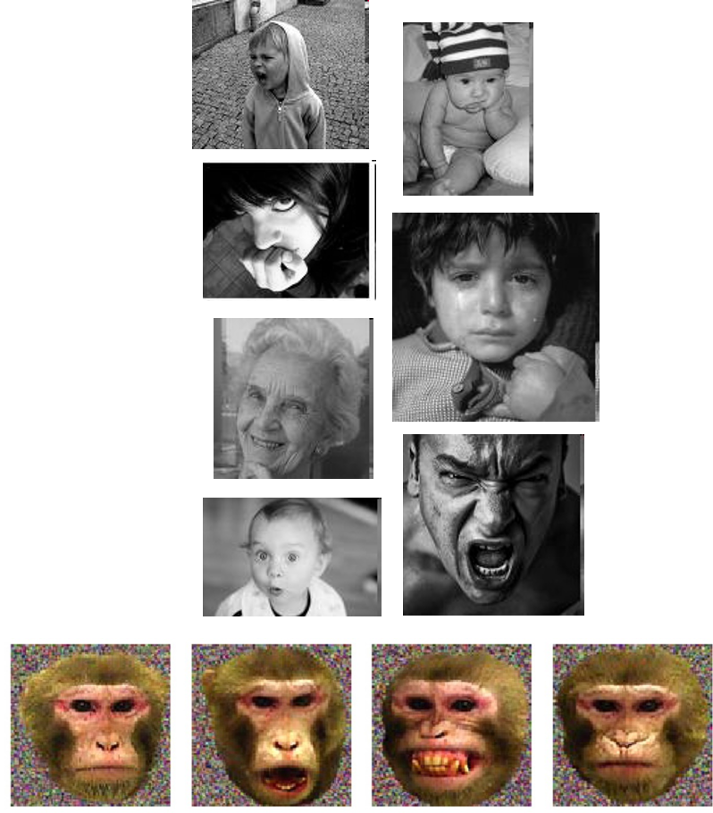
Pero, ¿por qué es importante esto dentro de la sub-asignatura de “Percepción Visual”? Forgas y Bower (1987) estudiaron el efecto que tienen las emociones dentro del procesamiento cognitivo. Al hacer esto encontraron que cuando cambiaba el componente emocional de un observador, cambiaban factores cognitivos de respuesta (criterio de decisión) a experimentos psicofísicos, sin embargo, no pudieron encontrar diferncias en el componente sensorial (detectabilidad o discriminabilidad). ¿Recuerdas la práctica 2?
Actualmente podemos decir que existen dos perspectivas distintas en cuanto a cuáles son las bases neurales del procesamiento de las emociones:
Hipótesis del hemisferio derercho podemos encontrar un claro ejemplo de esta teoría en Borod, 1998: Según esta teoría, todas las emociones serán procesadas más fácilmente por el hemisferio derecho independientemente de su valencia.
Hipótesis del acercamiento-retraimiento de Davidson (2003): Según esta teoría el hemisferio iquierdo procesaría las emociones positivas mientras que el hemisferio derecho procesaría de forma principal las emociones negativas.
Concretamente, Davidson (1995) propuso una división del sistema emocional en tres subsistmeas o componentes:
- Experiencia emocional (experiencia que genera la emoción)
- Expresión emocional (expresión emocional factor conductual esquelético)
- Percepción emocional (identificación de la propia emoción)
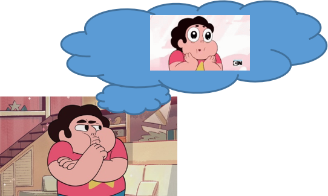
Es posible que el procesamiento de una emoción no llegue hasta el tercer nivel. Un ejemplo de esto sería cuando nos sentimos molestos por tener hambre. En muchos casos, no somos conscientes de qué estímulo es el que nos está haciendo sentir a disgusto y nos podemos llegar a molestar por cualquier acontecimiento o comentario. En este caso, nos sentimos molestos con las acciones de los demás aunque no hayan hecho nada para molestarnos dado que estamos atibuyendo nuestro estado emocional a un evento externo y no a la experiencia emocional inicial, el hecho en sí de tener hambre.
En esta práctica se pretende mostrar que la identificación de la emoción de un tercero es beneficiosa en tanto que ayuda a la planificación de la acción. Es importante entender que para que se pueda identificar una emoción, primero han de ser percibidos los rasgos faciales que indican esa emoción, por lo que la incidencia de éstos en un campo visual u otro afectarán a la velocidad de procesamiento de la misma. Para estudiar la asimetrías cerebrales en su análisis cognitivo, utilizaremos una técnica llamada técnica de campo visual dividido.
¿En qué consiste ésta técnica? Cuando miramos hacia un elemento en el entorno, la luz proviniente del campo visual derecho se refleja en la parte izquierda de la retina. Esta información a su vez es procesada por el hemisferio izquierdo y viceversa. De esta manera, podemos aprovechar esta asimetría en el sistema visual para controlar qué información se está procesando por cada hemisferio cerebral. De esta manera podemos estudiar existe una asimetría en la manera en la que el cerebro procesa los rasgos de expresiones faciales emocionales.
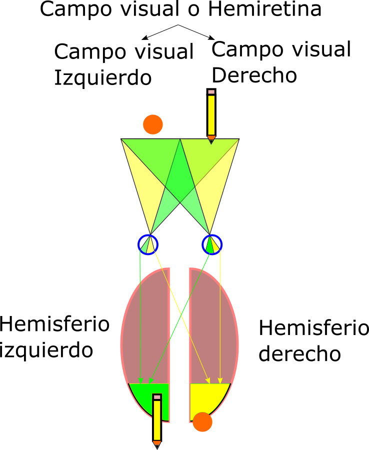
Estudio de Alves, N. T., Fukusima, S. S., & Aznar-Casanova, J. A. (2008)
Utilizando la técnica de campo visual dividido Alves, N. T., Fukusima, S. S., & Aznar-Casanova, J. A. (2008) mostraron a diferentes observadores una serie de imágenes mostrando rostros con expresiones emocionales a ambos lados de una pantalla. De esta manera, las expresiones emocionales eran dirigidas para ser procesadas por el hemisferio izquierdo o derecho preguntándose si habría un hemisferio que procese más rápidamente/eficazmente cada emoción.
Para ello mostraron a 80 participantes distribuidos en 5 grupos experimentales imágenes de caras con expresiones de felicidad o sorpresa (estímulos positivos), caras enfadadas o tristes (estímulos negativos) o caras con expresión neutra (estímulo no-emocional).
Grupo 1 = target Felicidad (vs T, S, N, M)
Grupo 2 = target Miedo (vs T, N, S, F)
Grupo 3 = target Neutral (vs T, M, S, F)
Grupo 4 = target Sorpresa (vs F, N, T, M)
Grupo 5 = target Tristeza (vs F, N, M, S)
Los participantes tenían que indicar el lado de la pantalla en la que se mostraba la emoción correspondiente al grupo al que se le había asignado. Es decir, si el participante pertenecía al primer grupo (target: alegría), debería seleccionar izquierda en el primer ensayo y derecha en el segundo ensayo.
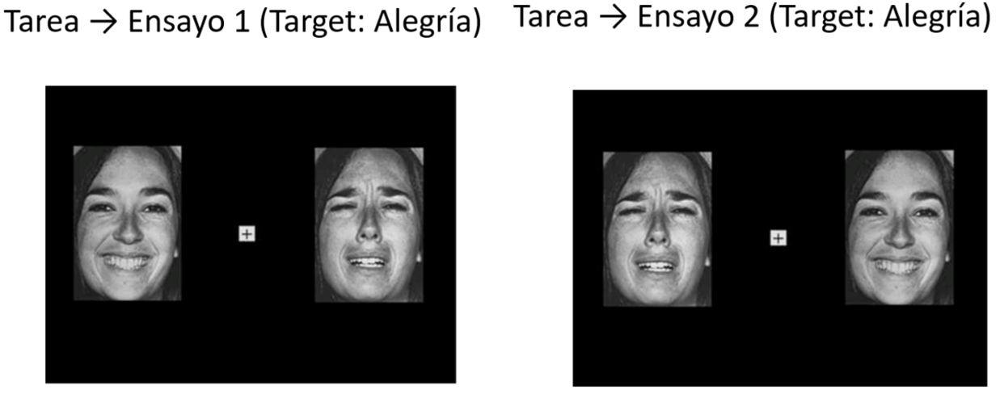
Los resultados en este experimento fueron los siguientes:
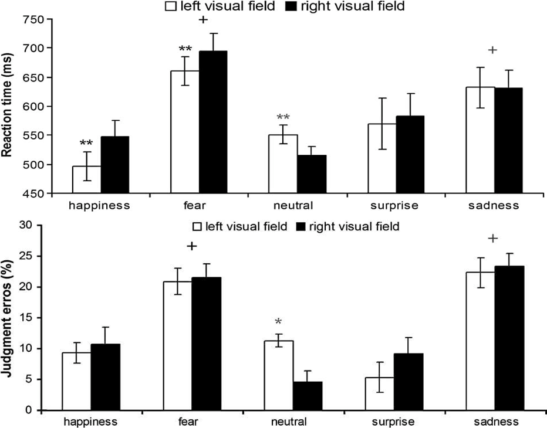
Sin embargo, los resultados obtenidos no dieron soporte completo a ninguna de las dos teorías, sino que dan soporte parcial a ambas propuestas. Si bien, los resultados con rostros neutros sugieren mayor apoyo empírico a la hipótesis del HD.
Para pensar: ¿Por qué el hecho de que los resultados de los rostros neutros muestren diferencias significativas aportan soporte parcial a la hipótesis del HD? —
Los autores proponen que se profundice en la naturaleza de los estímulos (por ejem., estáticos / dinámicos), ya que el patrón de resultados da lugar a interpretaciones.
Práctica 5: Percepción de expresiones emocionales
Pregunta experimental: Dados los resultados del experimento anterior, los autores propusieron que sería interesante replicar los resutlados con estímulos de otra naturaleza. Para ello, en este caso realizaremos un experimento con caricaturas que reflejan diferentes expresiones emocionales de una manera esquemática.
Para realizar el experimento, tendréis que descargar el ejecutable que se encuentra en el campus virtual: Práctica 5 Percepción de expresiones emocionales
Hipótesis: No tenemos una dirección de hipótesis fija. Se trata de un estudio exploratorio para ver si los datos arrojan soporte a la hipótesis del acercamiento-retraimiento o a la hipótesis del hemisferio derecho.
Metodología
Estímulos: Se utilizarán caricaturas mostrando con las siguientes expresiones emocionales: Neutral, Felicidad, Tristeza, Miedo y Sorpresa.
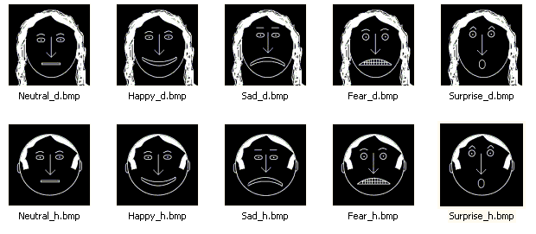
Instrucciones: El método será parecido al del experimento anterior. En concreto, tenéis 3 ejecutables distintos en los que tendréis que atender y buscar expresiones de “Felicidad”, “Tristeza” o “Neutras” dependiendo del ejecutable en el que os encontréis.
Grupo 1 = target Felicidad (vs T, N, M)
Grupo 2 = target Tristeza (vs N, S, F)
Grupo 3 = target Neutra (vs T, M, S, F)
La tearea es la siguiente, si nos encontramos en el grupo 1 (Felicidad), tendremos que indicar en qué lado de la pantalla se encuentra la caricatura que muestra esa emoción intentando no prestar atención a la caricatura del lado opuesto.
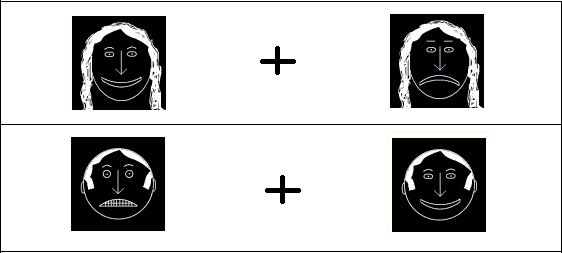
Variables
Variables independientes (VI):
Grupo asignado.
Emoción distractora.
Posición de la emoción target.
Variable dependiente (VD), aquella que manipula el observador:
Tiempo de reaccción.
Tasa de errores.
Resultados
Los resultados obtenidos “en general” serán los siguientes:
Si observamos los RTs:
Los estímulos positivos se procesan más rápido por el hemisferio izquierdo.
Los estímulos negativos parecen no mostrar diferencias significativas entre hemisferios.
En el procesamiento de los estimulos neutros no hay diferencias.
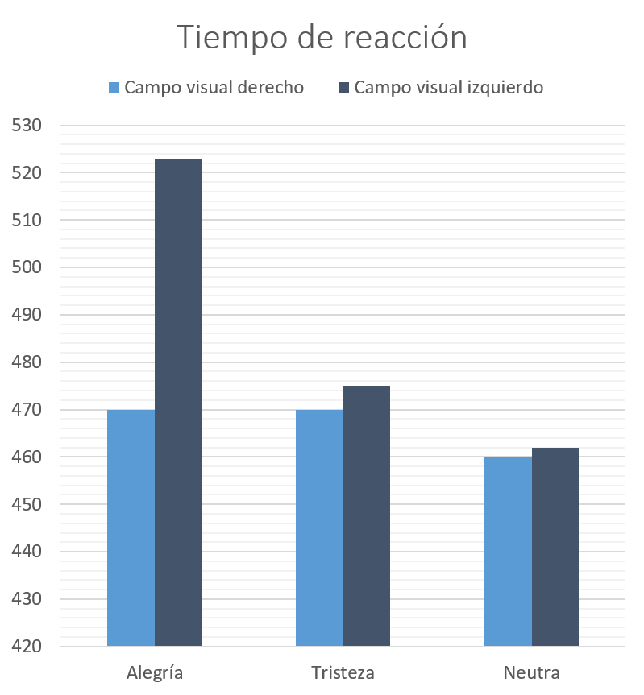
Si observamos el % de errores:
En los estímulos positivos hay menos errores cuando son procesados por el hemisferio izquierdo.
Los estimulos negativos procesados por el hemisferio derecho dan lugar a menor tasa de errores.
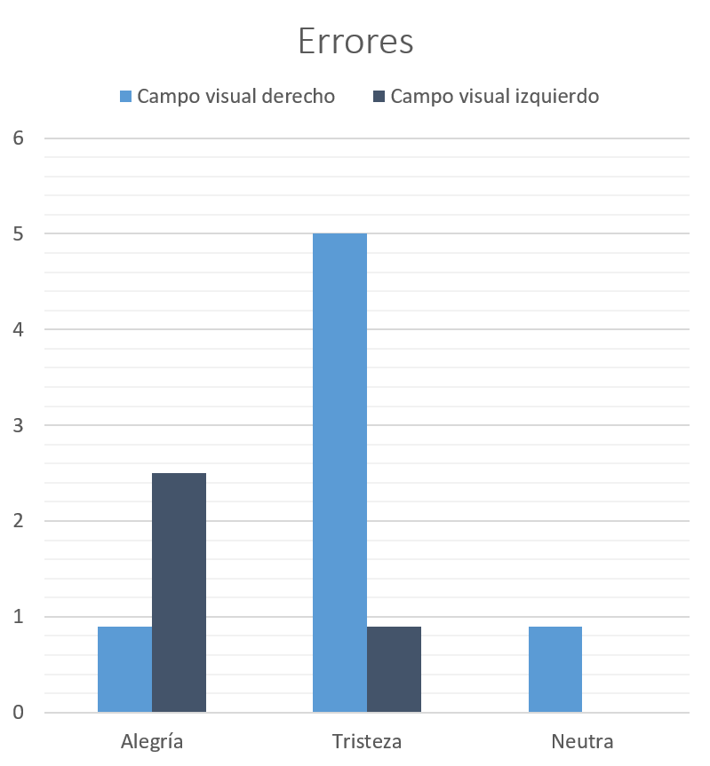
Discusión
Los resultados con caricaturas muestran una tendencia que parece encajar con la hipótesis de acercamiento-retraimiento. Mientras que los resultados del experimento de Alves, Aznar-Casanova y Fukusima (2008) parecerían dar soporte parcial a la hipótesis del HD.
Para pensar más:
¿Por qué puede ocurrir esto?
¿Se te ocurre algún otro experimento que pudiera ser interesante de realizar utilizando la técnica de Campo Visual Dividido?
¿Hay alguna zona del campo visual que sólo sea procesada por un hemisferio?